Aankondiging
Demonstratie 22 november 2025 in Den Haag
Op zaterdag 22 november komen we samen op het Malieveld om erkenning te eisen voor gedupeerde kinderen. Bekijk de vier thema's en meld je aan.
Lees meer →Blijf op de hoogte van onze acties, het herstelproces en de aanloop naar de demonstratie.
Op zaterdag 22 november komen we samen op het Malieveld om erkenning te eisen voor gedupeerde kinderen. Bekijk de vier thema's en meld je aan.
Lees meer →Het manifest van OJPT bundelt onze vijf pijlers tot één oproep tot rechtvaardigheid voor gedupeerde kinderen. Lees de volledige tekst online.
Bekijk het manifest →Het panel groeit. We verwelkomen nieuwe gemotiveerde jongeren die meedragen aan de beweging voor erkenning en herstel.
Maak kennis →De Tweede Kamer bespreekt het herstel voor gedupeerde kinderen. OJPT pleit voor gelijkwaardige behandeling en inspraak van jongeren zelf.
Lees meer →We organiseerden een ontmoetingsavond in Rotterdam waar gedupeerde jongeren hun verhaal deelden en verbinding vonden.
Volgende bijeenkomst →
Ons verhaal wordt steeds vaker gehoord. Lees de interviews en reportages waarin panelleden het woord voeren namens gedupeerde kinderen.
Meer info →